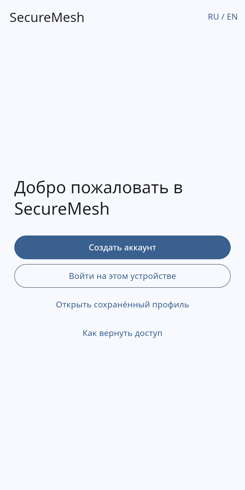

Защищённые личные сообщения
Нативный Linux-клиент, OpenMLS, независимая сверка ключей.
Мессенджер со сквозным шифрованием и локальным хранением ключей, рассчитанный на нестабильную связь. Знакомьтесь с тестовой версией и её возможностями.

Статус тестовой версии: функции не означают готовность к использованию с чувствительными данными.
Нативный Linux-клиент, OpenMLS, независимая сверка ключей.
SQLCipher; восстановление утерянной истории пока не реализовано.
Исторические лабораторные испытания GPRS; результаты не распространяются автоматически на iOS.
Фото, видео, файлы, голосовые сообщения и видеокружки ожидают проверки полного цикла отправки и воспроизведения.
Голосовые и видеозвонки, показ системных уведомлений и доставка в фоне пока не прошли приёмку на Android и Linux.
Создание приватной группы, подписка на публичный канал и публикация в нём медиа входят в план разработки.
Есть механизм доверия устройств, но перенос истории и полноценный multi-device MLS не завершены.
Последняя опубликованная сборка: 0.1.0 · iPhone alpha 1. Описание релиза · Проверка сборки.
Alpha, не production. Не используйте реальные чувствительные данные. IPA для iPhone не устанавливается одним нажатием; TestFlight и App Store пока не подтверждены.
Неподписанная сборка arm64
IPA содержит Flutter-клиент и нативное ядро Rust. Для установки нужны подпись Apple и provisioning profile. Запуск на физическом iPhone не подтверждён.
Тестовый клиент
Есть лабораторные GUI и сетевые испытания. Публичного установщика в Releases пока нет.
В разработке
Публичный APK и испытания на устройстве не подтверждены.
Запланировано
Поддерживаемая версия и установщик пока не подтверждены.
Приватные чаты недоступны
Необходима отдельная проверка браузерного криптографического ядра.
Опубликована неподписанная arm64 IPA. Сборка и статические проверки прошли; запуск на устройстве не подтверждён.
Подсказки в клиенте, проверка HTTPS-адреса, опциональная отправка подтверждений через Resend SMTP.
Реестр обновлён: 27.11.2026. Последний релиз · Технический статус проекта.
Представьте двух людей — Алису и Бориса. Алиса пишет «Встретимся в 19:00?». В обычном незашифрованном сервисе сервер мог бы получить текст. В SecureMesh текст сначала обрабатывает криптографическое ядро OpenMLS прямо в приложении Алисы.
К тексту добавляются идентификаторы сообщения, чата и отправителя. OpenMLS подписывает и шифрует эти данные с помощью секретов переписки. Зашифрованный конверт сохраняется в очереди на устройстве.
Сервер получает шифротекст через защищённое HTTPS/WSS-соединение, проверяет право отправки и записывает конверт в PostgreSQL. Отдельно видит служебные данные: отправителя, чат и время.
Приложение получает конверт, проверяет криптографическую подлинность и соответствие отправителя, расшифровывает текст и сохраняет его в локальной зашифрованной базе.
TLS (HTTPS/WSS) закрывает соединение от посторонних в сети. На сервере этот слой заканчивается.
MLS (E2EE) закрывает сам текст от сервера. Этот слой снимается только участником переписки с нужным криптографическим состоянием.
Устройства устанавливают секреты с помощью MLS и публичных ключей. Из общего секретного состояния выводятся отдельные ключи сообщений; по мере обмена и обновления группы состояние меняется. Сервер пересылает публичные материалы и защищённые Welcome, но не получает готовый секрет переписки.
Публичный ключ — информация, которой можно делиться. Закрытый ключ и секреты переписки — то, что должно оставаться у участников.
Публичный ключ устройства занимает 32 байта. Он позволяет проверить, кто подписал данные. Закрытый ключ создаётся на устройстве и нужен для подписи; публичный ключ не позволяет подписывать от чужого имени.
Публичные ключи размером 32 байта помогают участникам установить секреты MLS, не передавая секрет открыто. Классическая стойкость X25519 и Ed25519 — примерно 128 бит, несмотря на размер представления.
Симметричный ключ непосредственно защищает содержание сообщения и его подлинность. MLS выводит ключи и одноразовые параметры из секретного состояния с помощью HKDF-SHA-256. Это не один постоянный пароль на все чаты.
2128
Это число возможных 128-битных ключей. Даже при условном переборе квинтиллиона (1018) ключей в секунду среднее время поиска составило бы около 5,4 триллиона лет. Это иллюстрация стойкости классического перебора, не гарантия отсутствия уязвимостей.
Подбирать ключ необязательно, если злоумышленник может украсть его или прочитать текст после расшифровки. Зашифрованная локальная база защищает файлы при закрытом профиле. Заражённое разблокированное устройство — отдельная угроза, которую один AES не устраняет.
Технически: OpenMLS, RFC 9420, набор MLS_128_DHKEMX25519_AES128GCM_SHA256_Ed25519. SHA-256 также используется для проверки совпадения шифротекстов при повторах. Обычный хэш не заменяет криптографическую подпись или аутентификацию MLS.
Пароль локального хранилища открывает эту базу на устройстве. Сервер его не получает.
Секреты MLS и пароль локальной базы не предусмотрены в серверной схеме.
| Поле | Что видит администратор |
|---|---|
| conversation_id | Идентификатор переписки, например chat-17 |
| device_id | Идентификатор устройства Алисы |
| client_id | Случайный ID конкретного сообщения, не постоянный ID клиента |
| ciphertext | 7fa391c82e54b0d1… (условный шифротекст) |
| digest | SHA-256 от шифротекста, для сравнения повторов |
| created_at / seq | 19:00:02 / порядковый номер записи |
Даже зная, что Алиса написала Борису в 19:00, администратор не получает сам текст. Это различие между содержанием и метаданными. Метаданные текущей доставки не анонимизированы.
Предполагаем, что у Алисы и Бориса исправные приложения и независимо проверенные ключи. Для каждого уровня доступа возможности различаются.
Видит собственные чаты, полученные сообщения и доступные ему данные собеседников. По текущему API можно также отличить существующий username от отсутствующего.
Чужой чат: штатный API не выдаёт чужую переписку; ключей для расшифровки нет.
Может наблюдать IP-адреса, время и объём передачи. TLS скрывает содержимое запросов, а MLS дополнительно защищает сам текст.
Чужой чат: не читается при корректной проверке TLS и E2EE.
Видит email, username, публичные ключи, связи между аккаунтами, время и шифротексты. Может пытаться угадывать слабые пароли по их хэшам.
Чужой чат: без клиентских секретов копии базы недостаточно для расшифровки.
Может наблюдать запросы, менять записи, выдавать сессии, блокировать доставку, видеть исходный пароль при входе и попытаться подменить ключ при первом контакте.
Чужой чат: уже установленный чат с проверенными ключами не открывается просто от root-доступа. Первоначальное доверие требует независимой проверки.
Исходный действующий bearer-токен может позволить выполнять запросы от имени устройства. Хэш токена из БД таким токеном не является.
Чужой чат: токен не содержит ключей MLS. Аппаратная привязка токена — направление развития.
Файл SQLCipher зашифрован отдельной парольной фразой. Возможна попытка угадывания слабой фразы; если она тоже украдена, защиту можно открыть.
Чат: защищён, пока секрет локального хранилища остаётся неизвестным.
Может читать отображаемый текст, перехватывать ввод или получать доступ к памяти и ключам в зависимости от своих полномочий.
Чат: потенциально доступен — шифрование не защищает от полного контроля над конечным устройством.
Имеет право читать полученные им сообщения и может сохранить или переслать их. Сквозное шифрование защищает от посредников, а не от самого получателя.
Чат: видит сообщения, к которым у него есть криптографический доступ.
При первом контакте Алиса и Борис сравнивают публичные ключи лично или через другой доверенный канал. Приложение запоминает подтверждённый ключ и отвергает его неожиданную замену. HTTPS подтверждает адрес сервера, но сам по себе не подтверждает, что сервер показал настоящий ключ Бориса.
| Данные | Как защищены | Для чего нужны |
|---|---|---|
| Пароль аккаунта | Argon2id | Вход в аккаунт. Случайная соль 16 байт, 64 МиБ памяти, три прохода, результат 32 байта; сервер при входе получает пароль через TLS. |
| Токен сессии | SHA-256 в БД | Случайные 32 байта (256 бит), представлены строкой из 64 hex-символов. Access token действует 15 минут, refresh — 30 дней с ротацией. |
| Пароль хранилища | SQLCipher | Открывает локальные данные. Не отправляется серверу. |
| Секреты MLS | Локальное хранилище | Подпись, согласование секретов и расшифровка переписки. Обычный вход на другом устройстве их не восстанавливает. |
Скрытие графа общения, анонимные очереди, независимые relay, прозрачность ключей, аппаратная защита секретов и зашифрованное облачное восстановление — следующие этапы развития, а не свойства текущего транспорта.
Когда 4G или 5G недоступны, а VPN не подключается, даже медленная сеть 2G/GPRS может оставаться рабочим каналом для коротких сообщений. SecureMesh не требует VPN для обычного прямого подключения к доступному серверу.
Граница возможностей: 2G не является универсальным обходом белых списков. Если оператор фильтрует GPRS так же, сервер недоступен или передача данных полностью отключена, сообщение останется в очереди. Работа на реальных сетях с белыми списками требует отдельных испытаний; текущие измерения моделируют слабую связь, а не цензуру.
Не менее 90% сообщений должны быть доставлены за 5 секунд в заданном лабораторном GPRS-профиле. Это новое обязательное требование развития, а не универсальная гарантия любой сети.
В каждом направлении; RTT 1,5 с; потери 3%. 200 сообщений от каждого из двух устройств, всего 400 за прогон. Ноль логических потерь и дублей.
Три лабораторных прогона GPRS, по 400 сообщений в каждом. P90 показывает время, за которое дошли не менее 90% сообщений.
Шкала полос — 0–5 секунд. Все три исторических прогона соответствуют новому порогу P90. Измерение: перед локальным шифрованием и записью → расшифровка и сохранение у получателя. Прогретые WSS/TLS-сессии; не испытание холодного старта или реального оператора.
Клиент использует постоянное защищённое WSS-соединение с компактным бинарным Protobuf, ограниченную параллельную отправку, подтверждения сохранения и повторную синхронизацию. При проблемах WSS доступен HTTPS fallback. Повторы не должны повторно шифровать уже поставленное в очередь сообщение.
При 10 кбит/с, RTT 3 с и 10% потерь обязательна eventual delivery без логических потерь и дублей после восстановления связности; пятисекундная гарантия для такого профиля не заявлена. Во время полного отключения сети доставка невозможна. 3G/4G/5G и Wi-Fi тоже целевые сети, их нужно отдельно испытывать.
Хотите проверить своё соединение? Откройте страницу готовности демосервера. Если она недоступна в вашей сети, это не означает, что 2G обязательно решит проблему. Адрес и инструкция подключения.
Шифрование не отключается на слабой сети. P90 ≤ 5 с — обязательная цель развития; показанные значения получены в ранее проведённых лабораторных прогонах, не обещание скорости для любого оператора.
Это публичная тестовая среда, а не гарантированно доступный production-сервис. Проверка открывает технический ответ readiness; она не подтверждает возможность регистрации, доставки или отсутствие сетевых ограничений.
Для общения нужен нативный клиент SecureMesh. Номер телефона не требуется. Выберите демосервер для знакомства с приложением или адрес своей тестовой среды.
Скопируйте этот адрес целиком в поле «Сервер HTTPS» приложения, без пути /health/ready или /v1.
https://securemesh.90-156-230-119.sslip.ioПроверка открывает технический ответ сервера, а не переписку. Страница руководства не является веб-клиентом и не принимает пароли.
Регистрация на демосервере: согласно его инструкции, оставьте поле электронной почты пустым — достаточно имени пользователя и пароля аккаунта. Эта возможность относится к демоверсии; обычная сборка может требовать почту и код. Если приложение не позволяет оставить поле пустым, уточните у организатора, какую сборку использовать. Не используйте тестовую версию для чувствительных данных.
В обновлённом клиенте выберите «Создать аккаунт» или «Войти на этом устройстве». Для доступа к прежней переписке выберите «Открыть сохранённый профиль». В ранней альфе создание аккаунта и вход объединены одной кнопкой.

Для публичного демосервера используйте адрес выше. Для локального теста на том же компьютере — https://127.0.0.1:5088. Для другой среды — выданный вам HTTPS-адрес без дополнительных путей.
От 3 до 32 символов: строчные латинские буквы a–z, цифры и подчёркивание. При входе укажите уже зарегистрированное имя. По этому имени собеседники отправляют приглашения; это не секрет и не пароль.
Демосервер: оставьте поле пустым, если используете предназначенную для него сборку. Обычная среда: укажите доступную вам почту (до 254 символов) для получения кода подтверждения.
От 12 до 256 символов. Используйте уникальный длинный пароль из менеджера паролей; не повторяйте пароль от почты или локального профиля. При повторном входе введите тот же пароль. Он нужен для входа в аккаунт, но не расшифровывает старую историю.
Нажмите «Создать аккаунт».
На демосервере при регистрации без email пропустите этот шаг, если приложение не показывает экран подтверждения. В обычной среде выполните следующие действия.
В поле «Код из письма» вставьте код целиком и нажмите «Подтвердить почту». Срок действия токена — 30 минут. Если организатор подключил Resend, проверьте указанный при регистрации почтовый ящик и папку «Спам». При таком способе адрес и код подтверждения обрабатывает почтовый сервис Resend. По умолчанию локальная среда складывает письма в Mailpit на вашем компьютере. Если код не принят, проверьте правильность и срок действия; при необходимости обратитесь к организатору теста.
На экране входа проверьте адрес и username, введите пароль аккаунта, если он запрошен, и заполните «Пароль локального хранилища» (от 16 до 256 символов).
Это отдельная секретная фраза, защищающая ключи и историю на устройстве. Серверу она не отправляется. Сохраните её в надёжном менеджере паролей. Потеря фразы или файла профиля сейчас может означать потерю истории.
Нажмите «Войти». При создании профиля приложение самостоятельно генерирует ключи устройства.
Нажмите «Открыть сохранённый профиль» и выберите прежний файл через значок папки. Введите пароль хранилища и нажмите «Открыть профиль». Не создавайте новый профиль без необходимости.
Откройте исходный сохранённый профиль и введите его пароль. Подготовленные ключи сохраняются, а приложение предложит продолжить вход; при истёкшей сессии снова запросит пароль аккаунта.
Для разработчиков с разрешённым доступом к исходникам: нужны Linux, Docker/Compose, Python, OpenSSL, .NET SDK 10.0.111 и Rust 1.93.1. В корне проекта выполните:
make bootstrap
make demoВ другом терминале:
bash scripts/install-flutter.sh
make build-linux
make clientТестовая среда должна доверять выданному локальному TLS-сертификату; проверку TLS нельзя отключать. После теста остановите свой стек командой make down, которая сохраняет том базы. Эти команды не являются публичным установщиком.
В разделе «Чаты» введите «Имя собеседника» и нажмите «Отправить запрос на чат». У собеседника должен быть подтверждённый профиль на том же сервисе.
Собеседник нажимает «Принять». На экране сравнения сверяет ключи устройства по независимому каналу (например, лично), отмечает «Я сравнил ключи» и подтверждает.
После принятия приглашения нажмите «Создать чат». Сравните публичные ключи независимо и подтвердите только при совпадении. Клиенты устанавливают защищённую MLS-сессию.
Откройте готовый чат, введите текст в поле «Сообщение» и нажмите отправку. При обрыве связи сообщение остаётся в зашифрованной локальной очереди и доставляется после восстановления связи.
В обновлённом клиенте на доверенном устройстве откройте «Настройки» → «Отображаемое имя». Введите имя и нажмите «Сохранить». Его увидят участники ваших личных диалогов рядом с @username. Сервер хранит это имя в профиле. Чтобы убрать его, очистите поле и сохраните.
Два человека могут выбрать одинаковое имя. Для приглашения используйте @username, а при открытии защищённого чата сверяйте ключи устройств. Изменение имени сохраняет уже установленную криптографическую привязку.
Зачем сравнивать ключи? Это как сверить удостоверение личности собеседника: сервер не должен решать за вас, кому принадлежит ключ.
| Статус сообщения | Что означает |
|---|---|
| В очереди на устройстве | Сообщение сохранено локально; сервер ещё не подтвердил запись. |
| Сохранено на сервере | Сервер подтвердил долговременную запись шифротекста. Это не означает, что собеседник прочитал сообщение. |
| Доставлено на устройство | Клиент получил подтверждение доставки сообщения. Собеседник мог ещё не открыть переписку. |
| Сохранено на устройстве | Входящее сообщение проверено и сохранено локально. |
Понадобятся новое устройство и уже доверенное устройство с открытым профилем. Держите оба рядом для сверки ключей.
Подключение подтверждает устройство для аккаунта. История остаётся в прежнем локальном профиле. Для чтения прежней переписки сохраните доступ к нему.
Есть исходный файл профиля и пароль хранилища. Откройте этот профиль на прежнем устройстве. Если появится «Продолжить вход», используйте сохранённое имя и тот же аккаунт. При действующей сессии достаточно нажать «Завершить вход».
Есть только пароль аккаунта. Для подключения ещё одного устройства потребуется действующее доверенное устройство. Поддержка сервера не располагает ключами для выдачи старой истории. Сохраняйте исходный профиль до проверки доступа к переписке после обновления.
При регистрации без email на демосервере письмо не требуется. Если ваша сборка требует подтверждение, уточните у организатора способ доставки. Для Resend проверьте свой адрес и папку «Спам», для локального Mailpit откройте почтовый интерфейс тестовой среды. Код действует 30 минут.
Нет. Для приватных чатов нужен нативный клиент. Используйте адрес демосервера в приложении; браузерная интеграция шифрования пока не прошла необходимую проверку.
Сейчас нет. Пароль аккаунта не содержит секреты MLS. Не удаляйте файл профиля и храните его пароль отдельно. Без оригинального профиля история может оказаться недоступной.
Проверьте подтверждение ключей, состояние сессии и сети. При статусе «В очереди» не создавайте повторно то же сообщение; дождитесь автоматического восстановления либо нажмите повторное соединение. При ошибке ключей не обходите проверку.
Это запланированные части соцсети. Текущая проверенная вертикаль — защищённый текстовый чат между двумя устройствами; полноценные группы, звонки, медиа, анонимная доставка и облачное восстановление пока не готовы.